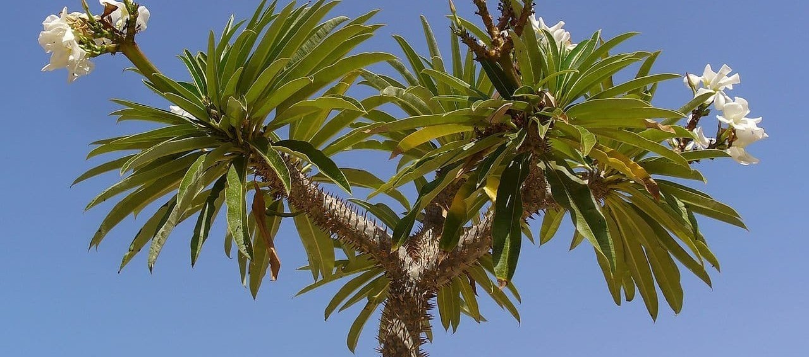

¿Puedes imaginar árboles que almacenan agua en sus troncos como si fueran botellas? Aquí, cada gota cuenta.
Explorar ZonaEsta zona parece un desierto, pero está llena de plantas y animales que desafían las reglas de la vida.
Explorar Zona¿Sabías que aquí habita una planta que 'bebe' niebla para sobrevivir? Explora esta zona y descubre su estrategia.
Explorar Zona
Entre colinas y suelos rojizos, esta región guarda secretos de adaptación únicos en plantas resistentes al frío y al viento.
Explorar ZonaEl 80% de las plantas de Madagascar no existen en ningún otro lugar del mundo. ¡Aquí solo crece lo que aquí nació!
Explorar Zona
Algunas plantas están desapareciendo antes de ser estudiadas. ¿Te atreves a conocerlas antes de que sea tarde?
Explorar Zona